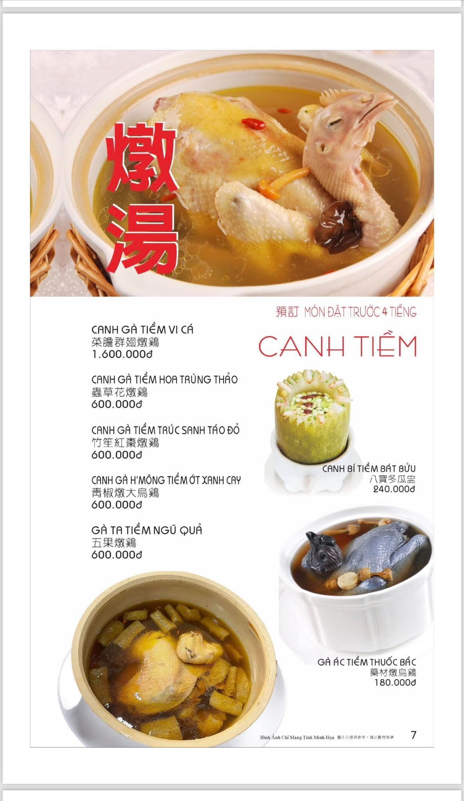
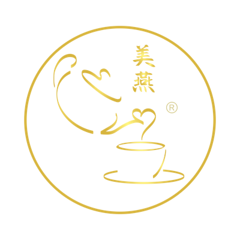
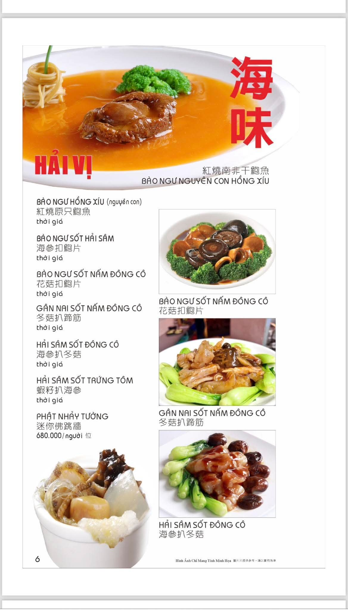

Canh tiềm
Một nồi canh cho bàn tiệc gia đình.
Canh gà tiềm vi cá, hồng trùng thảo, trúc sâm táo đỏ và các món tiềm khác được chuẩn bị cho những bữa ăn cần sự chăm chút.
Nhờ Mỹ Yến gợi ý món tiềm
Nhờ tư vấnChọn món theo dịp
Hãy bắt đầu từ dịp dùng bữa, số khách và ngân sách. Mỹ Yến sẽ xác nhận món đang có, mức giá và cách phục vụ trước khi bạn quyết định.

Canh tiềm
Canh gà tiềm vi cá, hồng trùng thảo, trúc sâm táo đỏ và các món tiềm khác được chuẩn bị cho những bữa ăn cần sự chăm chút.
Nhờ Mỹ Yến gợi ý món tiềm
Bào ngư & hải vị
Bào ngư hồng xíu, bào ngư sốt hải sâm, hải sâm và Phật nhảy tường dành cho dịp tiếp khách hoặc mừng một cột mốc đặc biệt.
Hỏi món hải vị đang cóYến sào & vi cá
Chọn súp vi cá theo khẩu vị hoặc yến tiềm theo chén. Mức giá được tính theo đơn vị ghi trên thực đơn và là mức tối thiểu.
Tư vấn yến sào & vi cáCách bắt đầu
Tiếp khách, mừng gia đình, sinh nhật hay một buổi gặp gỡ cần sự đặc biệt.
Đây là cơ sở để Mỹ Yến gợi ý món phù hợp và giải thích rõ mức giá tối thiểu.
Mỹ Yến kiểm tra món, xác nhận giá và trao đổi cách phục vụ trực tiếp qua Zalo hoặc điện thoại.